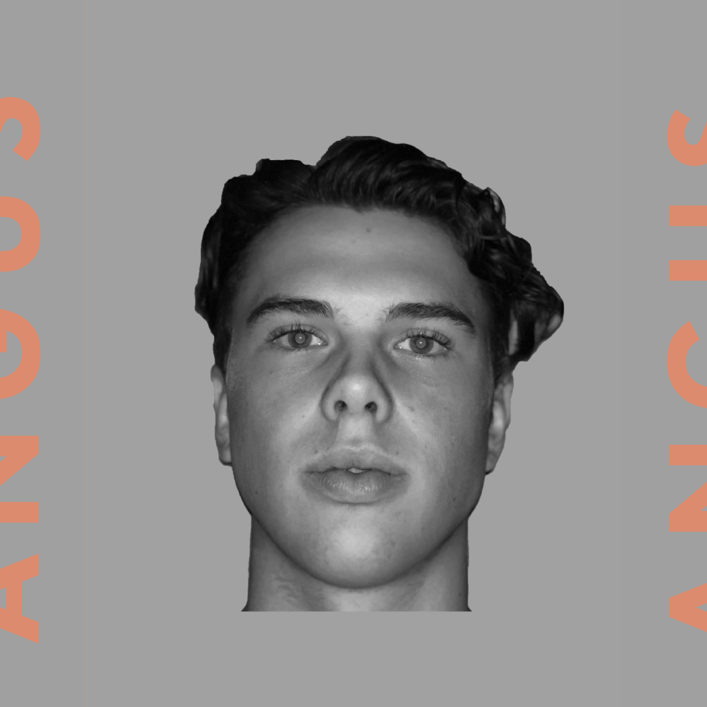
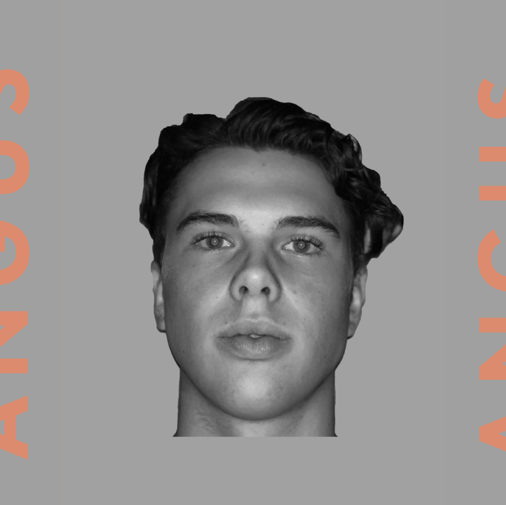
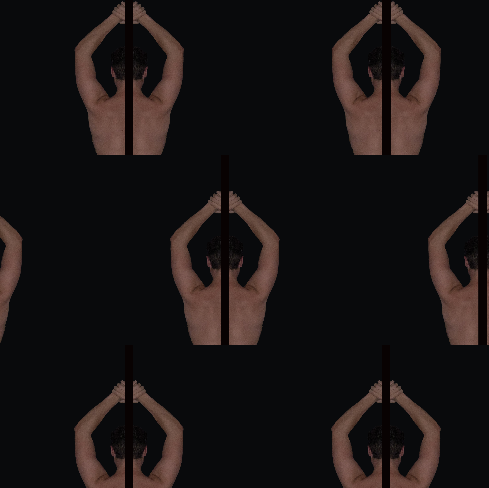
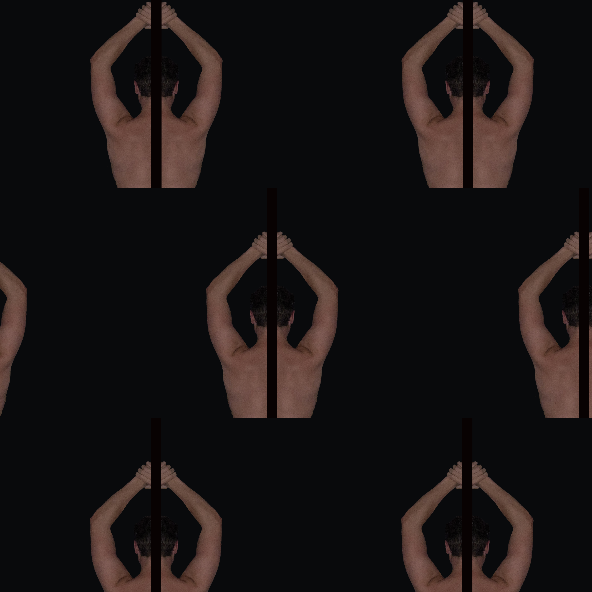

Project Title: Digital Archive
Format: Website
Supervised by: Tony Palmer
Link to
webdesign
A digital archive of photographic expression.
Using photography I explored the form of the human body. Bringing the images together using html and css coding.
 

 
